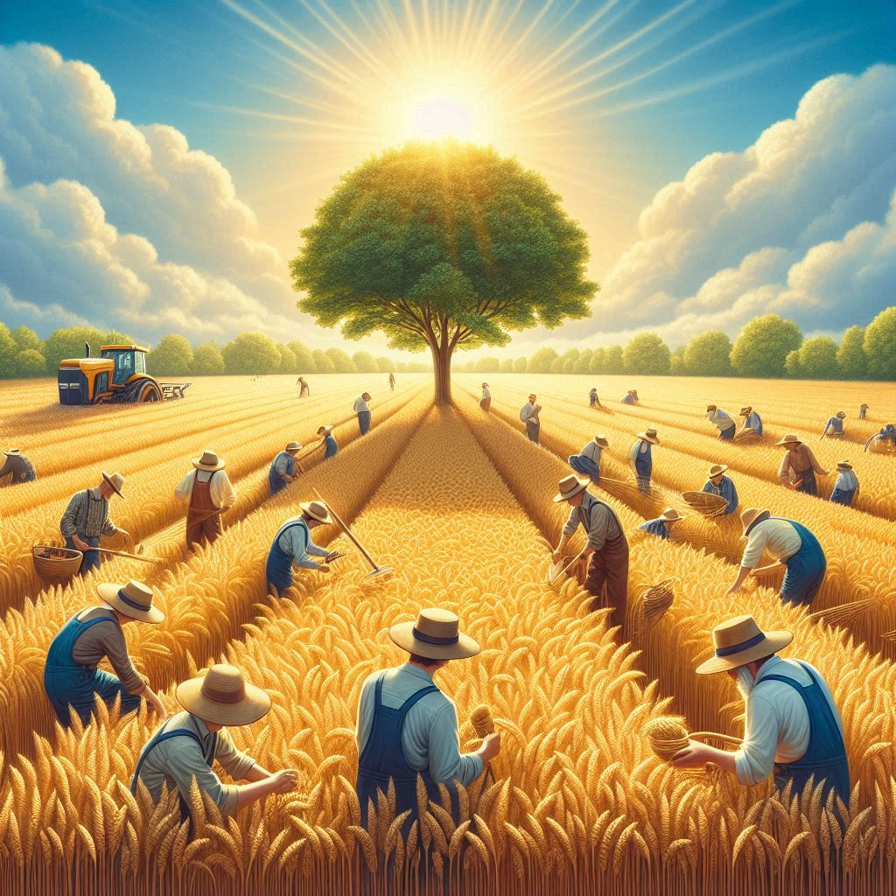
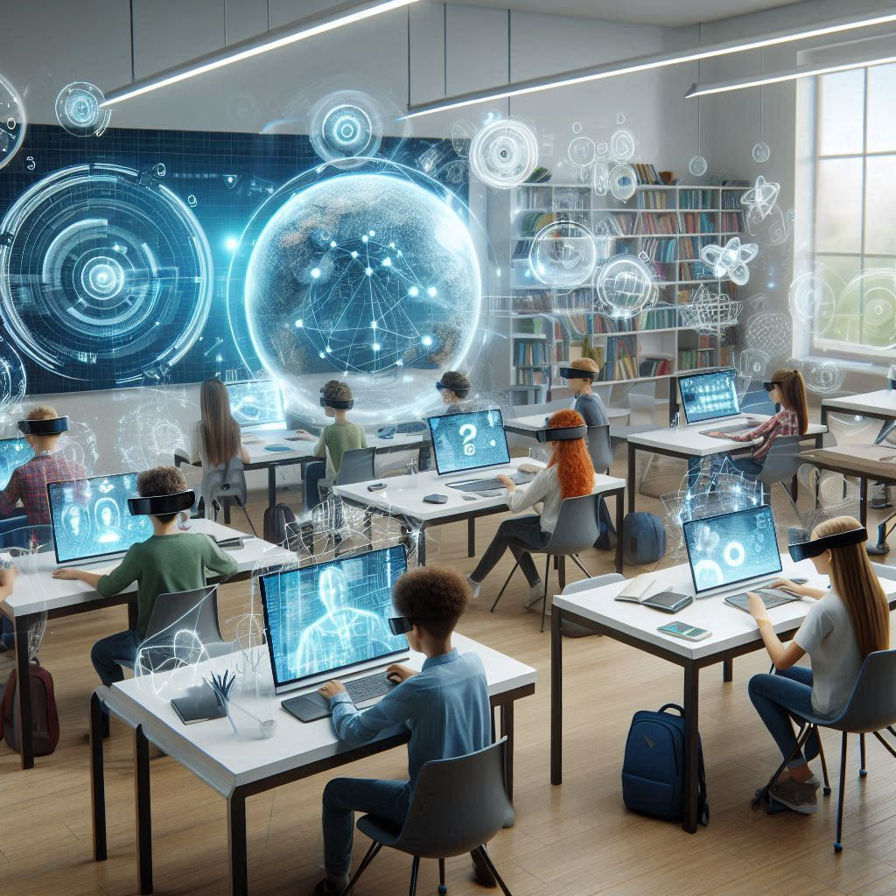
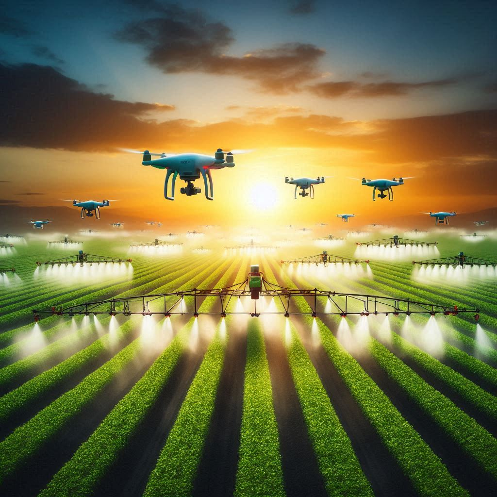

Uma visão sobre a transição do campo para a cidade e como isso impacta nosso ambiente escolar.
A vida no campo é marcada por atividades agrícolas e a criação de gado, representando uma conexão direta com a natureza e a produção de alimentos. Com o passar dos anos, as oportunidades no campo evoluíram, e muitas pessoas escolheram migrar para a cidade em busca de novas perspectivas.
A migração para áreas urbanas tem sido motivada pela busca por melhores oportunidades de emprego, educação e qualidade de vida. Esse movimento, porém, traz consigo desafios significativos, incluindo a adaptação ao novo ambiente e a competição por recursos.
A transição do campo para a cidade afeta diretamente o ambiente escolar, tanto nas áreas rurais quanto urbanas. A educação é um meio fundamental para garantir que os estudantes possam colher oportunidades em qualquer um desses contextos, preparando-os para o futuro.
Com os avanços tecnológicos, a integração entre o campo e a cidade se tornou mais viável. A agricultura de precisão e as cidades inteligentes são exemplos de como a tecnologia pode promover um desenvolvimento sustentável, equilibrando os benefícios da vida urbana e rural.
Os avanços do campo à cidade influenciam diretamente o currículo escolar. Projetos práticos e atividades que conectam os alunos com a realidade de ambos os ambientes são essenciais para prepará-los para os desafios futuros.